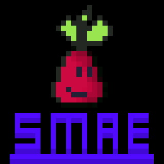

Hello and welcome to my personal blog, portfolio and art gallery. This website is for pretty much showing off all of my work and a home page for T.L.Tco (my campany name). if you want to cheack out my websites click this link: my website projects I will also write and link a few of my project on this front page. I also have a page dedicated to games that I have made TLT made games. . This will show games that i have helped make and chat bots that i have made.
most of my art is going to be made in aesprite whitch is a vedeo game styled pixel art editor meaning that all of my digital gallery will be pixel art like the skull to the right. all of my game art will be displayed to the right on this page.

activityfinder
One of my bigest projects ever was activity finder in total me and my freind coded 40,000 lines of code. The project lasted for about half a year in 2020 ending after we got bored of it. The reason activity finder was created is because of a national competition called one two three tech. 123 tech is a stem competition where school students need to fix a problem in our comunity. Our original idea for the web app was a educational moari Language application. but we soon change and dicided to make a "activity finder" instead. if you go to the website and click activity finder you will be shown two buttons asking you a question like inside or outside. meaning that when you click one or the other for example if you clicked outside it will only show you activitys that involve being outside like tag. basically it is just a complicated filter for activitys. now if you go onto the the front page agian you can see a few more buttons like gamepage, book review, and about us. These where all things that me and my friend made basically because we where bored and dicided to keep adding to the wewbsite.